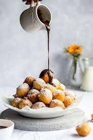

Fritule
History
Fritule are a very popular croatian dessert. They are small fried balls of dough usually served with icing sugar or coated in granulated sugar. Fritule origin from a Venetian cuisine modified by Frittole, which were typically eaten during Lent. Fritule are also common desserts in Italy and Denmark.
Croatian Fritule are miniature doughnuts that are a favorite during the holidays. Fritule differ from beignets because they are usually made with citrus and raisins, and flavored with brandy or rum. Using the brandy or rum stops excessive oil getting absorbed into the fritule.
Ingredients
- 1 (0.25-ounce) package of active dry yeast
- 1 teaspoon of sugar
- 8 cups all-purpose flour
- 1 teaspoon salt
- 1 cup dark raisins
- 1/2 cup walnuts, chopped
- 1 tart apple, grated
- 2 teaspoons lemon zest
- 3 to 4 cups water, room temperature
- 3 cups oil, for frying
- icing sugar, for optional dusting
Directions
- Gather ingredients
- Grate the apple
- Proof the yeast by dissolving it in 1 teaspoon sugar and 1 cup of warm water (not over 110 F). When it foams, pour into a large bowl and add the flour, salt, raisins, walnuts, grated apple, and zest. Mix well. Add 3 to 4 cups water, or as much as necessary to achieve a cake batter consistency. Cover the bowl with plastic wrap and let the batter rise until doubled, about 1 hour.
- In a heavy-bottomed pan or Dutch oven, heat oil to 370 F. Carefully drop tablespoons of batter into the oil, being careful not to overcrowd. Fry until golden on the bottom. Turn over once to brown both sides.
- Remove the fritules with a slotted spoon onto layers of paper towels to drain. Repeat until batter is finished. Sprinkle fritule with confectioners' sugar while still hot, if desired.
- Serve warm and enjoy!

Sources
The Spruce Eats
World Food Story